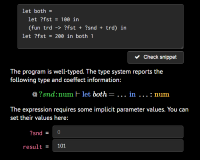
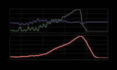

Coeffects playground Interactive essay based on my PhD thesis
In my PhD thesis, I worked on integrating
contextual information into a type system of functional programming languages. For example,
say your mobile application accesses something from the environment such as GPS sensor or your
Facebook friends. With coeffects, this could be a part of the type. Rather than having type
string -> Person, the type of a function would also include resources and would be
string -{ gps, fb }-> Person. I wrote longer introduction to coeffects on this
blog before.
As one might expect, the PhD thesis is more theoretical and it looks at other kinds of contextual information (e.g. past values in stream-based data-flow programming) and it identifies abstract coeffect algebra that captures the essence of contextual information that can be nicely tracked in a functional language.
I always thought that the most interesting thing about the thesis is that it gives people a nice way to think about context in a unified way. Sadly, the very theoretical presentation in the thesis makes this quite hard for those who are not doing programming language theory.
To make it a bit easier to explore the ideas behind coeffects, I wrote a coeffect playground that runs in a web browser and lets you learn about coeffects, play with two example context-aware languages, run a couple of demos and learn more about how the theory works. Go check it out now or continue below to learn more about some interesting internals!

Interactive essays
The coeffects playground is something between an article about coeffects and an implementation of a simple coeffect language - it guides you through an explanation (as an article would), it lets you run examples, but it also lets you write your own little programs and run them or type check them and explore the typing derivations.
Probably the best explanation of what my interactive coeffect playground tries to offer is from Bret Victor's essay called Explorable Explanations:
An active reader asks questions, considers alternatives, (...) tries to generalize specific examples, and devise specific examples for generalities. An active reader doesn't passively sponge up information, but uses the author's argument as a springboard for critical thought and deep understanding.
Do our reading environments encourage active reading? Or do they utterly oppose it? A typical reading tool, such as a book or website, displays the author's argument, and nothing else. The reader's line of thought remains internal and invisible, vague and speculative. We form questions, but can't answer them. We consider alternatives, but can't explore them.
Bret Victor, Explorable Explanations
Bret Victor also has a nice sample showing the ideas of Explorable Explanations on the climate change and a network science paper. For network science or climate change, you can imagine interesting visualizations and how changes of parameters done by the reader can affect them. For presenting coeffects, I had to figure out how to use similar ideas in a fairly theoretical environment. Programming language theory papers usually have just a couple of typing rules or translation rules written as dry mathematical equations.
Quite surprisingly, I actually learned about Bret Victor's nice demos only later when I started working on my demo. What made me think about different ways of presenting academic research earlier was Robert Pirsig's Zen and the Art of Motorcycle Maintenance and The Medium is the Massage by Marshall McLuhan and Quentin Fiore. Finally, it was also the Future Programming Workshop organized by Jonathan Edwards. (Thanks!)
Playing in the playground
The playground has a JavaScript implementation (not written in JavaScript, of course!) of a simple context-aware programming language. This includes a parser, type checker, translator (which turns your source code into a simple desugared version) and an interpreter for the target language, so pretty much all you'd need in a real implementation. But those components are used in a different way than how you would use them in a real-world implementation. The playground lets you "look under the cover" in a number of ways.
Run your own small programs
You can run a couple of samples or your own programs. This type-checks your code (shows you the type), infers the required context and generates a simple UI where you can enter the contextual information (required implicit parameters or past values). Then it translates your source code into the simpler target language and runs the interpreter. This is the closest view to "normal" running of a program.
Interactive data-flow demo
One of the context-aware languages is a simple data-flow language where you can write programs over streams. In addition to a simple demo where you just enter N past values by hand in textbox, the essay offers a more fun version - where last N values are taken from X and Y coordinates of your mouse moves!
Explorable typing derivations

The most interesting new thing in my thesis is a coeffect type system that tracks the contextual information about programs in the types of functions. But when you run a type checker, you usually just see "Good" or "Bad" as the result! In the essay, you can explore the typing derivation - the reasoning that the algorithm did to prove that your program is well-typed. If you see a typing judgement, click on the assumptions to go up or on the conclusions to go down!
Comonadic language translation
Programs you write may contain special contextual language constructs like ?fst (implicit parameter) or
prev (past value in data-flow). The way programs run is that they are translated to a simpler target language
without those special constructs (a bit like how the do notation for monads works).
The playground exposes this part too and you can see the translated version of your source programs.
More essay features

In addition to the interactive parts, I also experimented with a few additional presentation options in the essay. When you come, some parts of essay are hidden and you have to explicitly reveal them - the idea is that when you just skim read the essay, you should see the most important parts. There are also a couple of mini-slide decks that compare coeffects with effects.
I have to say, writing an interactive essay is probably more work than writing an academic paper about the work, but I think it makes a dry topic like programming language theory much easier to understand. After exploring the playground, you should see a pop-up with a brief survey, so please use it to give me feedback about the project! I'm curious to see what people think about this way of presenting programming language research!
Behind the scenes
All the code in the essay runs as JavaScript on the client-side, but I'm not crazy enough to write a parser and type checker for a language in JavaScript, so I used F# and FunScript to compile F# into JavaScript. All source code is available on GitHub, so feel free to have a look there!
Thanks to F# and FunScript, the whole implementation including parser, type checker, translator, interpreter and even most of the user interface are only some 2800 lines of code. It compiles to 46000 lines of ugly JavaScript - partly because of advanced F# features like generic and pattern matching and partly because FunScript does not try to optimize much. (I'm quite curious to see how Fable or WebSharper would compare!)
There is a number of really nice things that make the implementation so short and simple.
Algebraic data types
Any general purpose programming language should have a way of defining algebraic data types. In F# those are called discriminated unions and they let us define what expressions and types look like in the context-aware programming language that you can use in the playground:
1: 2: 3: 4: 5: 6: 7: 8: 9: 10: 11: 12: 13: 14: 15: 16: 17: |
|
I simplified the definition a bit, but it shows the idea. The Expr type captures different kinds
of expressions. For example (fun x -> x) 10 is parsed as an application App with Fun on the
left-hand side and Number on the right-hand side. There are two additional constructs for the
context-aware language features. QVar models special ?foo variables and Prev lets you access
previous value in data-flow computations such as (x + prev x) / 2.
The Type is interesting too. There is Primitive for primitive types like num and a Func type
representing a function. You can immediately see that a function is not just T1 -> T2 with two types,
but that it also carries a Coeffect annotation with information about context that needs to be
available when you run the function.
Parser combinators
To parse the source code into Expr values, I wrote a minimal parser combinator library (sadly,
I cannot use FParsec, because it needs to compile to JavaScript).
The parsing is still done in two steps - we first turn a sequence of characters into a sequence of
tokens and then turn tokens into Expr value. This makes the parsing code easy to read and write.
For example, fun x -> ... and prev ... are parsed like this:
1: 2: 3: 4: 5: 6: 7: 8: 9: 10: 11: 12: 13: |
|
The <*> operator represents sequential composition. For func, we need to parse the fun keyword
followed by an identifier, -> token and an expression. The expression to access previous value of
a data stream, we just write prev followed by a term. (There is a distinction between expressions
and terms to deal with function application and operators. The parser also deals with operator
precedence and things like that.)
Type checking and constraint solving
The next part of the code is the type checker.
This walks over the parsed Expr value, annotates
everything with types and generates constraints. Initially, a lot of the types are variables
(think 'a' in F# generics) and constraints specify equalities. For example, if you write
(fun x -> x) 5, the type of the function is 'a -> b' and there will be constraints 'a = 'b
(generated from the body) and 'a = num (generated from the application).
Similar constraints are also collected about the coeffect annotations.
With F#, the constraint resolution becomes just a recursive loop with pattern matching:
1: 2: 3: 4: 5: 6: 7: 8: |
|
If there are no constraints left (first case), we are done and we return the results. If
there is a constraint t = t (with both things equal), we can drop it. The last case is
the most typical one - if we have two functions, l1 -> l2 and r1 -> r2, we turn the
constraint (l1 -> l2) = (r1 -> r2) into a pair of constraints l1 = r1 and l2 = r2
and we also collect a new equality requirement for coeffect annotations. One of
the omitted case (for variables) then collects the final assigns which maps variable
names to types. (In the final version, I sadly had to turn this into a more explicit
loop, because JavaScript does not do tail-calls...).
Translation to target language
When you run a coeffect program, it is parsed, type checked and then it is translated to
a target language. This replaces the special constructs like Expr.Prev and Expr.QVar
into expressions that pass the context around explicitly in ordinary variable. For details,
see the essay. The translation is, again, just a recursive function with pattern matching.
Two cases look like this:
1: 2: 3: 4: 5: |
|
The function takes ctx which is an expression that represents a newly generated variable
that keeps the context. If the expression e is a number, we just turn it into a number.
When translating a variable access Var(v), we produce an expression that calls a special
counit operation on the context carried by the variable represented by ctx. (The
|@@| operator is just a custom operator that creates Expr.App value).
And even the user interface
Although I mainly used F# for the language implementation part, I also used FunScript jQuery bindings to write some of the user interface. For example when you are looking at a typing derivation, you can click on parts of the typing judgement to navigate through the derivation. This is handled by code that looks roughly like this:
1: 2: 3: 4: 5: 6: 7: 8: 9: 10: 11: 12: 13: |
|
The locations variable keeps the current path that the viewer followed (if you click on
the first assumption of the first judgement and then on the second assumption of the second
judgement, this will be a list [0; 1]). The jq function is an F# wrapper for writing
$("...") in JavaScript and jthis is a special wrapper for writing $(this) which is
not directly available in F#.
Summary
In the case of coeffect playgrounds, I did the interactive essay after writing the thesis, but I think this way of presenting research is not just about giving additional and "easier to understand" presentation. It actually changes which part of the research problem become important.
When writing papers, you have to extract minimal calculus that can be neatly presented in a paper. When writing interactive essays, you instead have to extract some core aspects of the functionality that you're creating to convince people that this is interesting. This means that you also start thinking differently about the problem. I actually wrote about this briefly in earlier post about programming languages and philosophy of science.
Most of the features in the interactive essay are really experiments based on what I thought could be useful when learning about coeffects. I would really like to hear from you - do you think this is useful? Should every PhD thesis come with an interactive essay? There is a brief survey you can fill on the page or contact me directly at @@tomaspetricek or tomas@@tomasp.net.
| Var of string
| Number of float
| Fun of Var * Typed
| App of Typed * Typed
| Prev of Typed
| QVar of string
| ( **** )
Full name: coeffectsplayground.Expr
union case Expr.Var: string -> Expr
--------------------
type Var = | Var
Full name: coeffectsplayground.Var
val string : value:'T -> string
Full name: Microsoft.FSharp.Core.Operators.string
--------------------
type string = System.String
Full name: Microsoft.FSharp.Core.string
val float : value:'T -> float (requires member op_Explicit)
Full name: Microsoft.FSharp.Core.Operators.float
--------------------
type float = System.Double
Full name: Microsoft.FSharp.Core.float
--------------------
type float<'Measure> = float
Full name: Microsoft.FSharp.Core.float<_>
union case Var.Var: Var
--------------------
type Var = | Var
Full name: coeffectsplayground.Var
Full name: coeffectsplayground.Typed
| Primitive of string
| Func of Coeffect * Type * Type
| ( **** )
Full name: coeffectsplayground.Type
union case Coeffect.Coeffect: Coeffect
--------------------
type Coeffect = | Coeffect
Full name: coeffectsplayground.Coeffect
Full name: coeffectsplayground.func
Full name: coeffectsplayground.prev
Full name: coeffectsplayground.solve
Full name: coeffectsplayground.translate
Full name: coeffectsplayground.locations
Remembers the current path
val ref : value:'T -> 'T ref
Full name: Microsoft.FSharp.Core.Operators.ref
--------------------
type 'T ref = Ref<'T>
Full name: Microsoft.FSharp.Core.ref<_>
Full name: coeffectsplayground.getNewPath
Generate path for the specified 'jo' element
Full name: Microsoft.FSharp.Core.Operators.snd
Published: Tuesday, 12 April 2016, 4:33 PM
Author: Tomas Petricek
Typos: Send me pull request!
Tags: coeffects, research, functional programming, programming languages